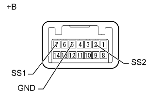

СИСТЕМА ПОСАДКИ И ЗАПУСКА (для функции запуска) > Не изменяется режим работы источника питания– питание не включается (IG и ACC) |
| 1.ПРОВЕРЬТЕ ЖГУТ ПРОВОДОВ И РАЗЪЕМ (АККУМУЛЯТОРНАЯ БАТАРЕЯ – ЭБУ РАСПРЕДЕЛЕНИЯ ПИТАНИЯ) |
 |
Отсоедините разъем G51 ЭБУ распределения питания.
Измерьте напряжение в соответствии со значениями, приведенными в таблице.
| Контакты для подключения диагностического прибора | Условие | Заданные условия |
| G51-2 (AM21) - масса | Всегда | 9,5-14 В |
| G51-1 (AM22) - масса |
| *a | Вид сзади разъема со стороны жгута проводов (к ЭБУ распределения питания) |
|
| ||||
| OK | |
| 2.ПРОВЕРЬТЕ ЖГУТ ПРОВОДОВ И РАЗЪЕМ (ЭБУ РАСПРЕДЕЛЕНИЯ ПИТАНИЯ – МАССА) |
Отсоедините разъем G51 ЭБУ распределения питания.
 |
Измерьте сопротивление в соответствии со значениями, приведенными в таблице ниже.
| Контакты для подключения диагностического прибора | Условие | Заданные условия |
| G51-6 (GND) - масса | Всегда | Менее 1 Ом |
| G51-5 (GND2) - масса |
| *a | Вид сзади разъема со стороны жгута проводов (к ЭБУ распределения питания) |
|
| ||||
| OK | |
| 3.СНИМИТЕ ПОКАЗАНИЯ ПОРТАТИВНОГО ДИАГНОСТИЧЕСКОГО ПРИБОРА (ИСТЕЧЕНИЕ ВРЕМЕНИ ОЖИДАНИЯ СЕРТИФИКАЦИИ КЛЮЧА) |
Подсоедините портативный диагностический прибор к DLC3.
Включите портативный диагностический прибор.
Войдите в следующие меню: Body / Power Source Control / Data List.
Снимите показания в режиме "Data List" и проверьте, что после переключения выключателя зажигания из положения OFF (ВЫКЛ) в положение ON (ВКЛ) (IG) в течение 1 секунды отображается "No".
| Информация на дисплее прибора | Измеряемая величина / диапазон измерения | Нормальное состояние | Замечание по диагностике |
| Key Certifi Wait T-Out | Истечение времени ожидания сертификации ключа / Yes или No | Yes: Истечение времени ожидания сертификации ключа No: Сертификация ключа завершена в пределах заданного времени | - |
|
| ||||
| OK | |
| 4.СНИМИТЕ ПОКАЗАНИЯ ПОРТАТИВНОГО ДИАГНОСТИЧЕСКОГО ПРИБОРА (ПУСКОВОЙ ПЕРЕКЛЮЧАТЕЛЬ 1, 2) |
Подсоедините портативный диагностический прибор к DLC3.
Включите зажигание (IG).
Включите портативный диагностический прибор.
Войдите в следующие меню: Body / Power Source Control / Data List.
В соответствии с указаниями на дисплее портативного диагностического прибора считайте данные в режиме Data List.
| Информация на дисплее прибора | Измеряемая величина / диапазон измерения | Нормальное состояние | Замечание по диагностике |
| Start Switch1 | Пусковой выключатель 1 / ON (ВКЛ) или OFF (ВЫКЛ) | ON (ВКЛ): Выключатель зажигания нажат OFF (ВЫКЛ): Выключатель зажигания не нажат | - |
| Start Switch2 | Пусковой выключатель 2 / ON (ВКЛ) или OFF (ВЫКЛ) | ON (ВКЛ): Выключатель зажигания нажат OFF (ВЫКЛ): Выключатель зажигания не нажат | - |
|
| ||||
| OK | |
| 5.ПРОВЕРЬТЕ ЭБУ РАСПРЕДЕЛЕНИЯ ПИТАНИЯ |
Подсоедините портативный диагностический прибор к DLC3.
Включите зажигание (IG).
Включите портативный диагностический прибор.
Войдите в следующие меню: Body / Power Source Control / Data List.
Снимите показания в режиме "Data List" и проверьте, что показания дисплея изменяются в соответствии с изменением режима источника питания при нажатии выключателя зажигания.
| Информация на дисплее прибора | Измеряемая величина / диапазон измерения | Нормальное состояние | Замечание по диагностике |
| Power Supply Condition | Состояние источника питания / IG2 ON, ST ON, All OFF, IG1 ON или ACC ON | IG2 ON: реле IG2 включено ST ON: сигнал запроса ST включен All OFF: все реле выключены IG1 ON: реле IG1 включено ACC ON: включено реле ACC | - |
Измерьте напряжение в соответствии со значениями, приведенными в таблице.
| *a | Устройство с подсоединенным жгутом проводов (ЭБУ распределения питания) | - | - |
| Контакты для подключения диагностического прибора | Положение переключателя | Заданные условия |
| G51-20 (IG1D) - масса | Зажигание выключено | Менее 1 В |
| Выключатель зажигания в положении ACC | ||
| Зажигание включено (IG) | (напряжение на контакте AM21 или AM22) составляет -2,0 В или выше | |
| G50-8 (IG2D) - масса | Зажигание выключено | Менее 1 В |
| Выключатель зажигания в положении ACC | ||
| Зажигание включено (IG) | (напряжение на контакте AM21 или AM22) составляет -2,0 В или выше | |
| G51-19 (ACCD) - масса | Зажигание выключено | Менее 1 В |
| Выключатель зажигания в положении ACC | (напряжение на контакте AM21 или AM22) составляет -2,0 В или выше | |
| Зажигание включено (IG) | (напряжение на контакте AM21 или AM22) составляет -2,0 В или выше |
|
| ||||
| OK | |
| 6.ПРОВЕРОЧНОЕ ИСПЫТАНИЕ |
Проверьте, что режим источника питания изменяется на ON (ACC) и ON (IG) при управлении выключателем зажигания.
|
| ||||
| OK | ||
| ||
| 7.ПРОВЕРЬТЕ ВЫКЛЮЧАТЕЛЬ ЗАЖИГАНИЯ |
|  |
Снимите выключатель зажигания.
Измерьте сопротивление в соответствии со значениями, приведенными в таблице ниже.
| Контакты для подключения диагностического прибора | Положение переключателя | Заданные условия |
| 7 (SS1) - 5 (GND) | Выключатель зажигания не нажат | 10 кОм или более |
| Выключатель зажигания нажат | Менее 1 Ом | |
| 2 (SS2) - 5 (GND) | Выключатель зажигания не нажат | 10 кОм или более |
| Выключатель зажигания нажат | Менее 1 Ом |
| *a | Устройство с неподсоединенным жгутом проводов (выключатель зажигания) |
| Результат | Следующий шаг |
| OK | А |
| NG (для моделей с 1GR-FE, с левосторонним рулевым управлением) | B |
| NG (для моделей с 1GR-FE, с правосторонним рулевым управлением) | C |
| NG (для моделей с 1KD-FTV, с левосторонним рулевым управлением) | D |
| NG (для моделей с 1KD-FTV, с правосторонним рулевым управлением) | E |
|
| ||||
|
| ||||
|
| ||||
|
| ||||
| А | |
| 8.ПРОВЕРЬТЕ ЖГУТ ПРОВОДОВ И РАЗЪЕМ (ЭБУ РАСПРЕДЕЛЕНИЯ ПИТАНИЯ - ВЫКЛЮЧАТЕЛЬ ЗАЖИГАНИЯ) |
Отсоедините разъем G51 ЭБУ распределения питания.
Отсоедините разъем G36 выключателя зажигания.
Измерьте сопротивление в соответствии со значениями, приведенными в таблице ниже.
| Контакты для подключения диагностического прибора | Условие | Заданные условия |
| G51-17 (SSW2) - G36-2 (SS2) | Всегда | Менее 1 Ом |
| G51-18 (SSW1) - G36-7 (SS1) | ||
| G51-17 (SSW2) - масса | Всегда | 10 кОм или более |
| G51-18 (SSW1) - масса | ||
| G36-5 (GND) - масса | Всегда | Менее 1 Ом |
|
| ||||
| OK | ||
| ||
| 9.ПРОВЕРЬТЕ DTC |
Подсоедините портативный диагностический прибор к DLC3.
Включите зажигание (IG).
Включите портативный диагностический прибор.
Войдите в следующие меню: Body / Power Source / DTC.
Считайте коды DTC.
Войдите в следующие меню: Body / Entry&Start / DTC.
Считайте коды DTC.
| Результат | Следующий шаг |
| Не выводится ни один из перечисленных ниже кодов DTC: B2785 Ошибка обмена данными между ЭБУ шины LIN B2287 Сбой ведущего устройства передачи данных LIN B2784 Обрыв или короткое замыкание в цепи антенной катушки | А |
| Код DTC B2287 выводится, однако DTC B2785 не выводится | B |
| Выводятся коды DTC, отличные от B2287. | C |
|
| ||||
|
| ||||
| А | ||
| ||